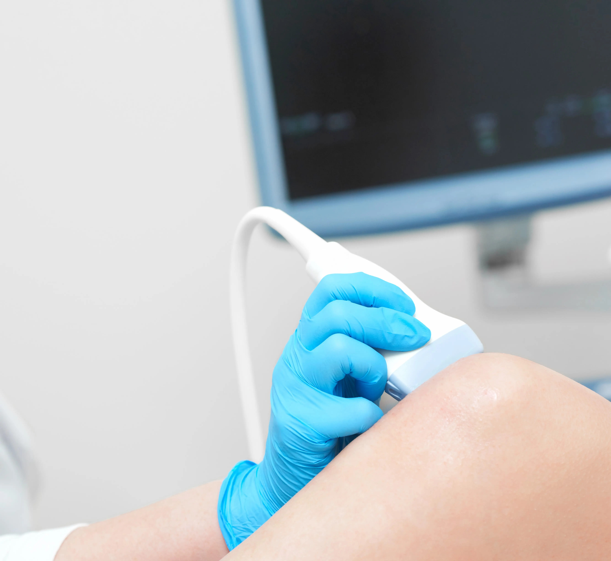

01 · PHARMACOPUNCTURE
약침치료
초음파를 활용한 정밀한 시술

한약재에서 추출·정제한 약침액을 경혈이나 치료 부위에 주입하는 치료입니다. 필요한 경우 초음파로 시술 위치와 주변 조직을 확인하여 시술 목표 부위와 주변 구조를 확인하며 약침을 시행합니다.
동탄에서 이어온 척추·관절 진료
목·허리부터 어깨·무릎까지.
증상을 살피고, 필요한 진료를 안내합니다.

해나무가 진료를 시작하는 방법
통증의 시작과 양상, 생활 속 불편함을 충분히 듣습니다. 움직임과 몸의 상태를 세심하게 살피고, 환자에게 필요한 치료 방향을 함께 정합니다.
척추·관절 질환부터 손상 후 통증까지, 증상의 양상과 몸의 상태를 함께 살펴 진료합니다.
디스크·협착증 관련 통증과 저림
자세히 보기 ↗ 02관절 통증·움직임 제한
자세히 보기 ↗ 03운동 중 부상·관절 및 근육 통증
자세히 보기 ↗ 04사고 후 목·허리 등 통증
자세히 보기 ↗갑작스러운 마비·심한 외상 등은 응급 진료가 우선입니다.
척추·관절 진료 안내 ↗초음파를 활용한 정밀한 시술

한약재에서 추출·정제한 약침액을 경혈이나 치료 부위에 주입하는 치료입니다. 필요한 경우 초음파로 시술 위치와 주변 조직을 확인하여 시술 목표 부위와 주변 구조를 확인하며 약침을 시행합니다.
관절과 근육의 움직임 개선

한의사가 손 등을 이용해 관절과 근육의 움직임을 조절하는 수기 치료입니다. 척추와 관절의 상태에 맞춰 근육의 긴장을 완화하고 통증과 움직임 제한의 개선을 돕습니다.
세 원장 모두 근골격계 초음파 관련 자격을 보유하고 있습니다. 상세 학력과 경력도 확인해 보세요.

자생한방병원 출신의 한의학박사

미국 초음파 자격증 보유

대학병원 교수 출신 전문의
자주 묻는 질문을 모았습니다.
증상이 시작된 시점, 복용 약물, 기존 검사·치료 내용을 알려주세요. 관련 자료가 있다면 지참하셔도 좋습니다.
아닙니다. 증상과 확인할 조직에 따라 필요 여부를 판단합니다.
초음파 영상을 보면서 시술 목표 부위와 주변 구조를 확인하는 약침 시술입니다. 모든 환자에게 적용하지는 않습니다.
보험 조건과 진료 내용에 따라 다릅니다. 방문 전 전화로 문의해 주세요.
네. 동탄 나루마을 해나무한의원은 365일 진료를 기본으로 하며 토요일·일요일·공휴일에도 진료합니다. 임시 휴진 및 변경 일정은 홈페이지 진료 일정에서 확인해 주세요.
평일 오전 9시 30분부터 오후 8시까지 야간진료합니다. 점심시간은 오후 1시부터 2시까지이며 접수는 오후 7시 30분에 마감합니다.
일요일과 공휴일에는 오전 9시 30분부터 오후 3시까지 점심시간 없이 진료합니다. 접수는 오후 2시 30분에 마감하며 임시 변경 여부를 확인해 주세요.
네. 토요일은 오전 9시 30분부터 오후 4시까지, 일요일은 오전 9시 30분부터 오후 3시까지 진료합니다. 원장별 진료 일정은 홈페이지에서 확인해 주세요.
대기가 발생하거나 접수가 마감될 수 있습니다. 예약 후 방문을 권합니다.
비급여 진료비 안내를 확인하세요. 실제 비용은 처방·용량에 따라 달라질 수 있습니다.
365일 진료를 기본으로 하며 평일 야간, 토요일·일요일·공휴일에도 진료합니다. 원장별 기본 진료 요일과 변경 일정을 안내합니다.
휴진·대진 등 변경 일정은 이곳에 안내합니다.
| 월 | 화 | 수 | 목 | 금 | 토 | 일 |
|---|---|---|---|---|---|---|
| 김성수 | 박세운 | 김성수 최영재 | 최영재 | 김성수 | 김성수 | 최영재 |
휴진·대진 및 공휴일에는 변경될 수 있습니다.
경기도 화성시 동탄솔빛로 47, 2층
나루마을 새마을금고 옆
거기부동산·행복한밥상이 있는 건물 2층
031-8003-3653
건물 지하 주차장: 진료시간 주차 지원
건물 뒤 공영주차장: 기존 안내 기준 1시간 30분 무료
※ 주차 지원 조건은 변동될 수 있으므로 방문 전 확인해 주세요.
평일·토요일 점심시간 13:00–14:00 / 일요일·공휴일 점심시간 없음
접수는 진료 마감 30분 전 종료
지도를 불러오는 중입니다.